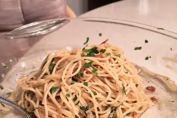

Spaghetti Aglio e Olio

Description
No two aglio e olio recipes are alike, but this one is pretty true to the classic method.
The key is slowly toasting the garlic slices to a perfect golden brown in the olive oil
If it's too light, you don't get the full flavor and if it's too dark it gets bitter. My advice? Do it perfectly.
Ingredients
You likely already have most of the ingredients you'll need for this spaghetti aglio e olio recipe on hand. Here's what you'll need:
- Spaghetti: This recipe, which makes about four servings, starts with one pound of uncooked spaghetti.
- Oil: You'll need ½ cup of olive oil.
- Garlic: Six cloves of thinly sliced garlic lends bold flavor.
- Seasonings: This traditional spaghetti aglio e olio is flavored with crushed red pepper flakes, black pepper, and fresh parsley.
- Cheese: For the most delicious results, grate your own Parmigiano-Reggiano cheese instead of opting for the pre-shredded stuff.
- 1 pound uncooked spaghetti
- ½ cup olive oil
- 6 cloves garlic, thinly sliced
- ¼ teaspoon red pepper flakes, or to taste
- salt and freshly ground black pepper to taste
- ¼ cup chopped fresh Italian parsley
- 1 cup finely grated Parmigiano-Reggiano cheese
Steps
- Bring a large pot of lightly salted water to a boil.
Cook spaghetti in the boiling water, stirring occasionally until cooked through but firm to the bite, about 10 to 12 minutes.
Drain and transfer to a pasta bowl.
- While the pasta is cooking, combine olive oil and garlic in a cold skillet.
Cook over medium heat to slowly toast garlic, about 10 minutes.
Reduce heat to medium-low when olive oil begins to bubble.
Cook and stir until garlic is golden brown, about another 5 minutes.
Remove from heat.
- Stir red pepper flakes, salt, and black pepper into pasta.
Pour in hot olive oil and garlic, and sprinkle on Italian parsley and half of the Parmigiano-Reggiano cheese;
toss until combined.
- Serve pasta topped with the remaining Parmigiano-Reggiano cheese.
Return to top
Return to main page